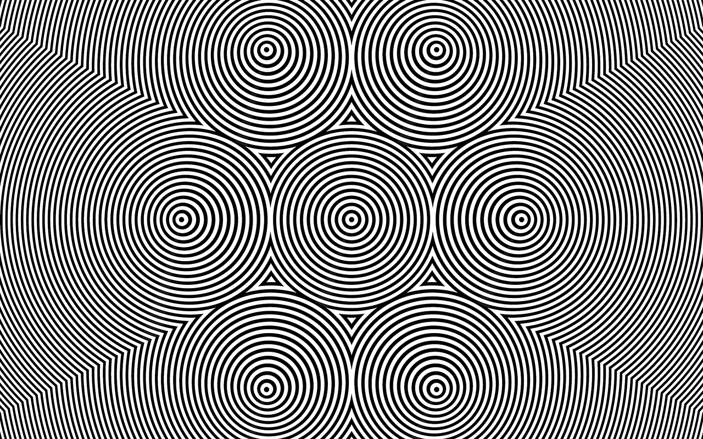
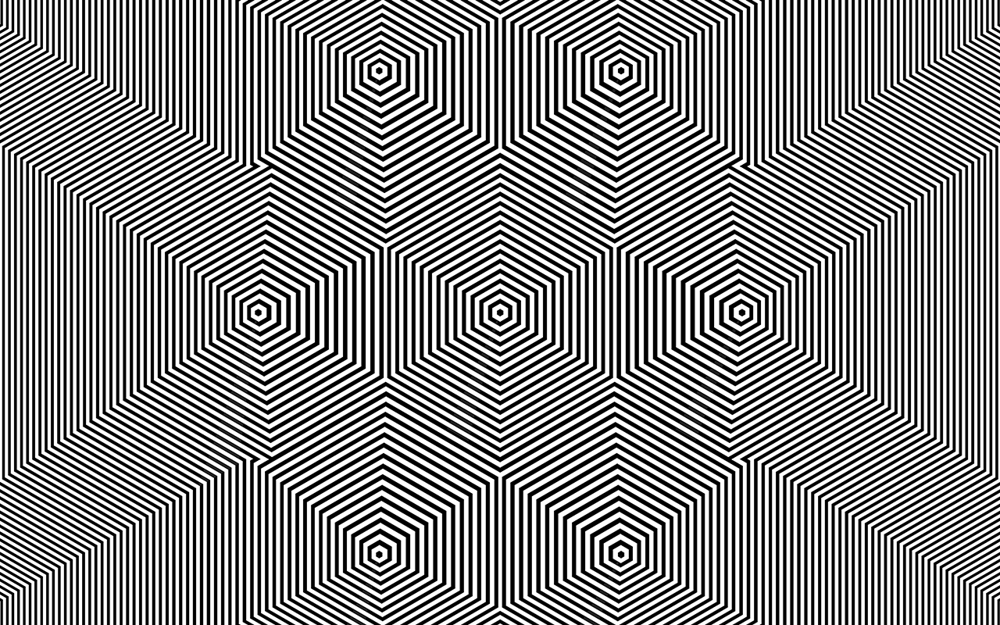
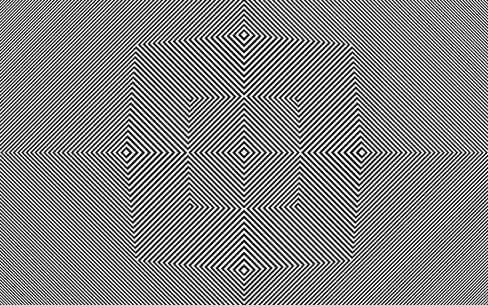
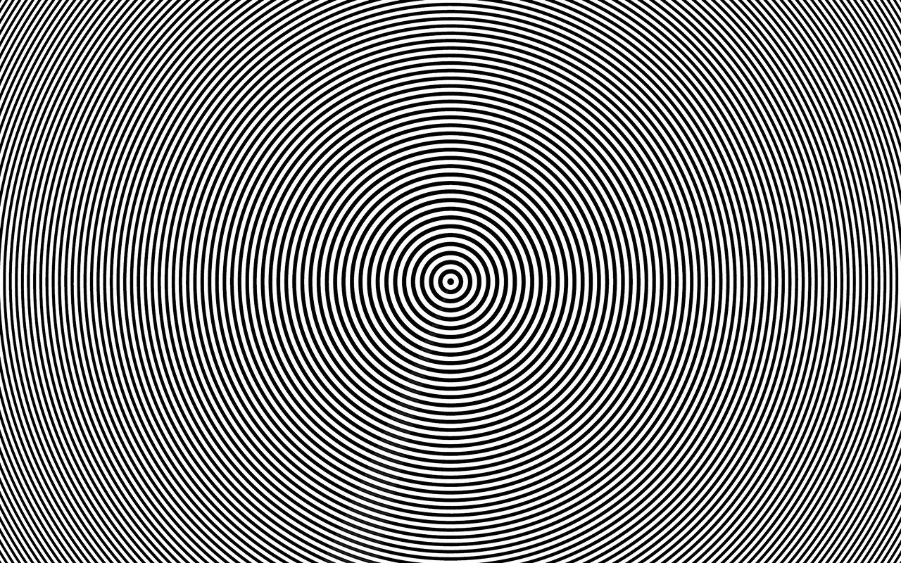

The Ar Moire diagrams are Polygonoscopic sounds.
The Hypervoid fabric seen through the macro lens.



incoming: hypervoid

The Hypervoid fabric seen through the macro lens.



incoming: hypervoid